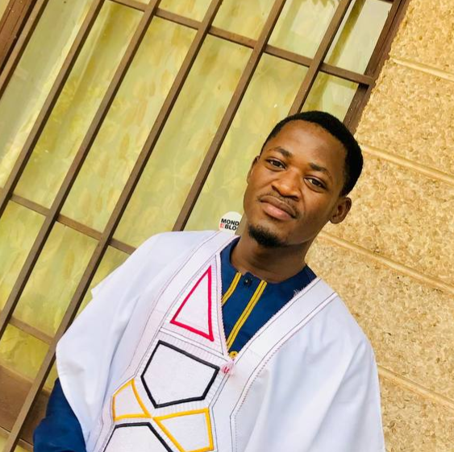

CURRICULUM VITAE

TCHAMBA TCHAKOUNTÉ GÉDÉON TRÉSOR
INGÉNIEUR DES TRAVAUX DES TÉLÉCOMMUNICATIONS
EN RADIOCOMMUNICATIONS
MES COORDONNEES
COMPETENCES
- Connaissance et réalisation des Systèmes d’Informations
Géographiques (SIG);
- Aptitudes en création des pages web;
- Bonne manipulation des routeurs
et équipements CISCO ;
- Maîtrise d’installation des réseaux
mobile ;
- Aptitudes sur les logiciels de
dimensionnement du réseau
mobile ;
- Connaissances approfondies en
domotique, internet des objets et
électronique ;
LANGUES
Français : Haut Niveau
Anglais : Niveau moyen
EXPERIENCES PROFESSIONNELLES
TECHNICIEN EN RESEAUX MOBILES A L’ENTREPRISE I ENGINEERING (I.ENG)
A parti du 25/04/2024
Travaux du projet HUAWEI SWAP MTN Cameroon,
dans tout l’entendu du territoire camerounais.
TECHNICIEN STAGIAIRE EN TELECOMMUNICATIONS, A LA CAMEROON TELECOMMUNICATIONS (CAMTEL)
Du 11/07/2023 – 09/09/2023
ROND-POINT BIAO, BAFOUSSAM
- Supervision du réseau public et privée d’entreprise ;
- Installation et maintenance des réseaux public ;
- Maintenance des sites BTS et Tests des local Roaming ;
TECHNICIEN STAGIAIRE EN TELECOMMUNICATIONS,A L’ENTREPRISE ADES
Du 05/07/2021 – 29/08/2021 AKWA, DOUALA
- Réalisation des chemins de câbles pour courants faibles et forts ;
- Réalisation des saignées et installation des gaines ;
FORMATION
- Certifier en Sécurité Électrique (B0,B1);
- Certifier en Travail et Sauvetage en Hauteur sur Pylône;
OGTI Services-HSEQ 2024
- Certifier CSC, EHS, SBC HUAWEI 2024
- Attesté Cisco CCNA 2024
- Formation en cours Développeur Web Full-Stack 2024
- Ingénieur des Travaux Télécoms option Radiocommunications 2024
Ecole nationale supérieure des postes des télécommunications et TIC
- Formation en informatique industriel et automatisme 2021
Institut Universitaire des Grandes Ecoles des Tropiques
- Baccalauréat scientifique Mathématiques et Sciences 2019
Lycée bilingue de Bonabéri